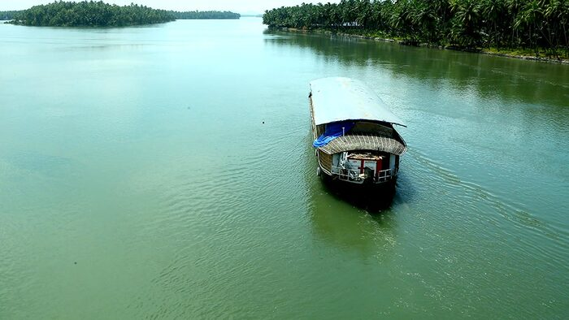
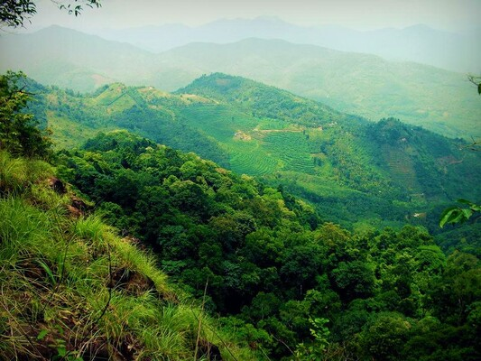

-

BEKAL FORT
Bekal Fort was built by Shivappa Nayaka of Keladi in 1650 AD, at Bekal. It is the largest fort in Kerala, spreading over 40 acres (160,000 m2). The fort appears to emerge from the sea. Almost three-quarters of its exterior is in contact with water. Bekal fort was not an administrative centre and does not include any palaces or mansions. An important feature is the water-tank, magazine and the flight of steps leading to an observation tower built by Tipu Sultan. Standing at the centre of the fort, this offers views of the coastline and the towns of Kanhangad, Pallikkara, Bekal, Mavval, Kottikkulam, and Uduma. The fort's zigzag entrance and surrounding trenches reveal its defensive strategy. Holes on the outer walls are designed to defend the fort effectively from naval attacks. The upper holes meant for aiming at the farthest targets; lower holes below for striking as enemy nearer and the lowest holes to attacking enemy closest to the fort.
-

VALIYAPARAMBA BACKWATERS
Valiyaparamba is separated from the mainland by Kavvayi Backwater. It is located five kilometres (3.1 mi) southwest of Cheruvathur and about 30 kilometres (19 mi) from Bekal, Kasaragod, north Kerala. The island is approximately 16.14 square kilometres (6.23 sq mi) in size, and had a population of 11,917 in 1991. The island's main source of income is from agriculture and fishing. The island has 13 wards ruling by each ward member to leading the Valiyaparamba Panchayathu.
-

MALOM WILD LIFE SANTUARY
vA popular tourist attraction of Kanhagad region, Malom Wildlife Sanctuary is all about lush green tropical green forest and variety of wildlife. The sanctuary inhabits a variety of animals and birds including peacock, the Malabar hornbill, wild pig, flying squirrel, rhesus monkey and porcupine etc. If you are lucky, you may also get to see king Cobra and Python.